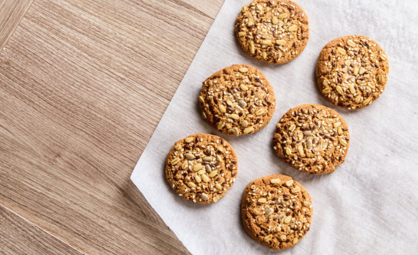
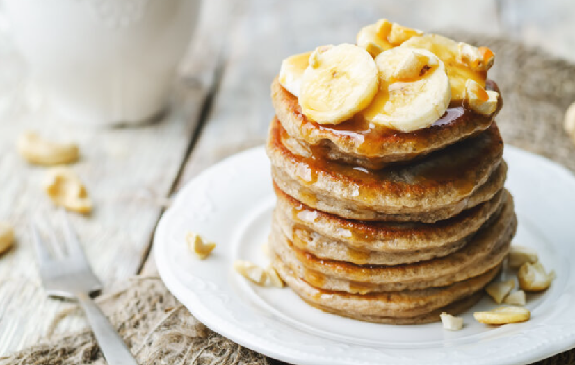
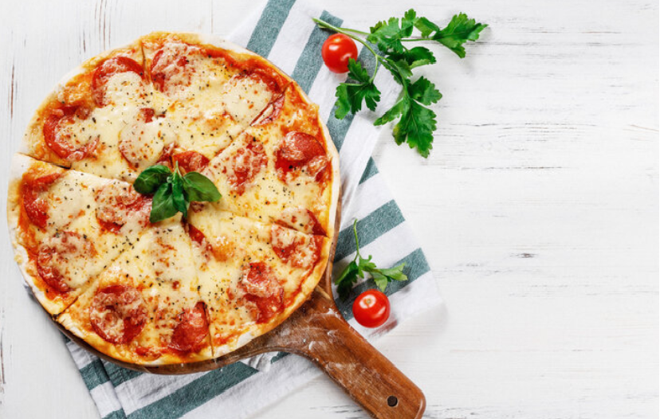

Biscoito de banana com aveia

Ingredientes
- 2 bananas bem maduras
- 1 xícara de aveia
Modo de Preparo
Amasse as bananas e acrescente a aveia, misturando bem. depois, faça bolinhos no formatode pequenos biscoitos e coloque paraassar em uma forma untada por 15 minutos em forno pré-aquecido a 175 graus. Se você quiser, também pode adicionar uma pitada de canela em pó, um punhadinho de frutos secos - como nozes e amêndoas, por exemplo - ou gotinhas de chocolate para incrementar as bolachas.Panqueca de Banana

Ingredientes
- 1 Ovo
- 1 Banana
- Canela a gosto
Modo de Preparo
Bata o ovo e amasse a banana. Junte a banana ao ovo em uma vasilha e mexa até dar liga. Adicione a canela. Acenda o fogo em temperatura média e adicione o óleo em uma frigideira grande. Com uma concha coloque a massa na frigideira formando círculos e frite dos dois lados.Massa de pizza

Ingredientes
- 1 xícara de farinha pronta com fermento
- 1 xícara de iogurte grego ou natural
- Farinha extra para polvilhar a superfície